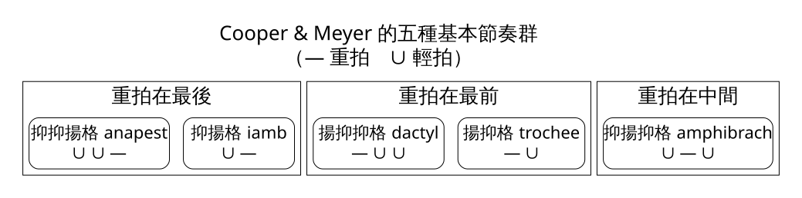
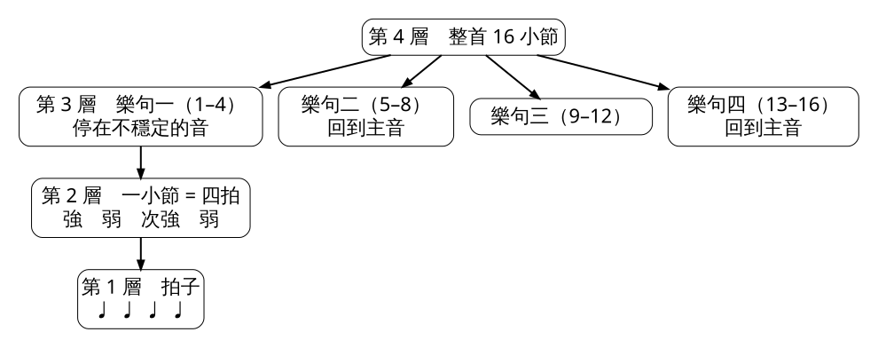
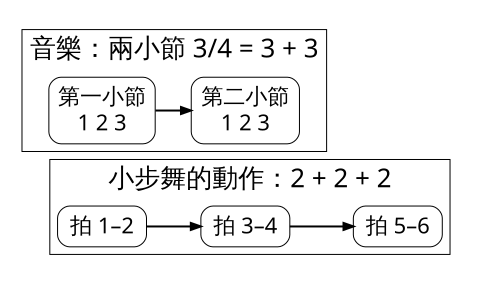
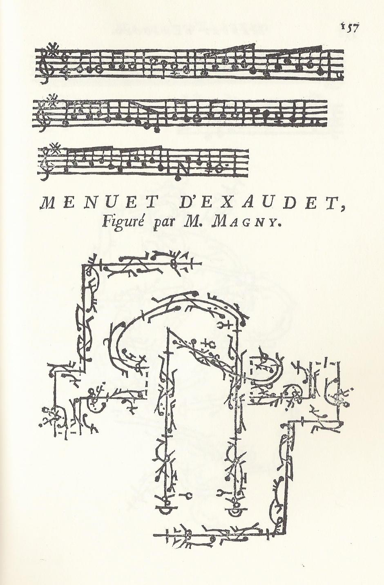

節奏是一層套一層的。拍子組成小節，小節組成樂句，樂句再組成整首曲子；同一個音，在下層可能是輕拍，在上層卻可能是一整組的重心。今天學會分辨這幾層，並練習同時聽見兩層。
房間裡的時鐘每一秒發出一樣的「答」，你卻常聽成「滴、答、滴、答」，像是兩個一組。1894 年，心理學家 Thaddeus Bolton 在《American Journal of Psychology》第 6 卷發表長文〈Rhythm〉，用一台能打出等距、等強度喀噠聲的裝置做實驗。受試者回報，有些聲音聽起來比較重，而且每隔固定幾個就出現一次，最常見的是兩個、三個或四個一組。速度越快，人聽到的組就越大；聲音間隔拉長到大約 1.6 秒以上，分組感就消失了。（實證研究；原文未取得，依二手文獻：Bååth 2015，《Music Perception》33(2)）
Rasmus Bååth 在 2015 年用更多受試者、更大的速度範圍重做這個實驗，所有參與者都回報聽到重音模式，組的大小也同樣隨速度改變。這個現象後來被稱為「主觀節奏化」，俗稱「滴答效應」。（實證研究）
這個實驗說明一件事：分組來自聽的人，聲音本身是平的。聽者會自動找出「哪個是重的」，再把其他聲音掛在它旁邊。Cooper 與 Meyer 的節奏理論，就是從這個動作出發。
拍、拍子、節奏要分開。1960 年，Grosvenor Cooper 與 Leonard B. Meyer 在芝加哥大學出版社出版《The Rhythmic Structure of Music》。出版社介紹，這本書的節奏理論大量借用格式塔原則，把節奏經驗看成對模式與分組的知覺，也就是第 9 堂談過的「整體大於部分」。（經典理論）
書的第一章依序定義「建築層級」（architectonic levels）、脈動（pulse）、拍子（meter）、節奏（rhythm）、重音、強調與分組。後來的研究者轉述他們的區分大致如下：脈動是一串等距的拍；拍子是數算兩個重音之間隔了幾拍；節奏則是一個或兩個輕拍如何圍繞一個重拍組成一組。（經典理論；依二手文獻：Drake、Dowling 與 Palmer 1991，《Music Perception》8(3)）
Drake 等人引用了原書第 8 頁的說法：重拍是節奏的「focal point」（焦點），輕拍圍繞它分組，也是相對於它被聽見。Cooper 與 Meyer 也承認重音可以來自力度、音長或旋律，但他們主張，不論來源，重音在組織節奏群時的作用都一樣。（經典理論；依二手文獻：Drake 等 1991，頁 316–317）
五種基本節奏群。他們借用古典詩律的音步名稱，但把原本的長短音改成強弱拍：抑揚格（輕－重）、揚抑格（重－輕）、抑抑揚格（輕－輕－重）、揚抑抑格（重－輕－輕）、抑揚抑格（輕－重－輕）（見圖 1）。書中第二章的小節標題就依這些名稱排列，例如「二拍子中的揚抑格與抑揚格」。（經典理論；章節名稱依芝加哥大學出版社書頁）

圖 1｜五種基本節奏群：一個重拍，加上一到兩個輕拍。來源：本課程依 Cooper & Meyer《The Rhythmic Structure of Music》1960 的分類繪製。授權：本課程自製圖解。
建築層級。這個理論最有用的地方在「層級」。一組揚抑格可以只是兩個音，也可以是兩個小節、兩個樂句。下層的一整組，到了上層就變成一個單位，再和旁邊的單位組成新的強弱關係。書的第三章「更複雜的節奏結構」專談高層級的分組，第八章則用整段分析示範，例子包括貝多芬《第八號交響曲》第一樂章。（經典理論；章節內容依出版社目錄，原書未取得）
層級一多，就會出現兩層「意見不同」的情況：某一層聽起來是抑揚格，上一層卻是揚抑格。書中有一節就叫「Rhythmic Ambiguity」（節奏的曖昧）。他們不把這種曖昧當成分析失敗，而當成音樂張力的一個來源。（經典理論；依出版社目錄）
用大家都會哼的旋律來拆：貝多芬《第九號交響曲》（Op. 125）終樂章的〈歡樂頌〉主題。這首交響曲 1824 年 5 月 7 日在維也納首演；終樂章裡，這段旋律先由大提琴和低音提琴在沒有伴奏的情況下完整奏出。（史料）以下分析以常見的 16 小節四拍子版本為準，是本課程依 Cooper 與 Meyer 的方法做的示範，不是他們書中的分析。
第 1 層：拍。旋律大多是四分音符，一步一步往上或往下走。單看這一層，拍子幾乎一樣重，就像 Bolton 實驗裡的喀噠聲。
第 2 層：小節。四拍一小節，第一拍最重，第三拍次重。開頭第一個音就落在第一拍，沒有弱起，所以一開口就是重拍。你唱「歡樂女神」時，「歡」字自然比「女」字重。
第 3 層：樂句。16 小節分成四個四小節樂句（見圖 2）。第一句結尾停在音階的第二音，聽起來像話沒說完；第二句幾乎一樣，卻在結尾落回主音。這兩句合起來，形成一個「問、答」的單位。依照 Cooper 與 Meyer 的邏輯，第二句是這組的重心，因為聽者等的就是它，所以在樂句層，第一、二句可以讀成一組抑揚格（輕－重）。

圖 2｜〈歡樂頌〉主題的四個層級（以常見 16 小節版本為例）。來源：本課程依 Cooper & Meyer 1960 的建築層級概念繪製；樂句結尾音依 Mutopia Project〈Ode to Joy〉樂譜查核。授權：本課程自製圖解。
有趣的地方在這裡：第 2 層告訴你「每小節開頭最重」，第 3 層卻說「整句的重心在後面」。同一個第五小節的第一拍，在小節層是重拍，在樂句層卻是「答句」的起點，要再往後走四小節才到重心。兩層同時存在，彼此拉扯。你可以把這種拉扯唱出來：前四小節唱得稍微往前趕、收得輕一點，後四小節穩穩落地，旋律就有了方向。
第 4 層：整首。第三句換了材料，在較低的音上停住；第四句回到開頭的旋律並在主音結束。四句在更高一層又組成「出發、回家、離開、再回家」的形狀。要把它讀成哪一種音步，可以爭論，這正是書中說的「曖昧」。
18 世紀的小步舞（minuet）提供了一個兩層節奏打架的例子。小步舞曲是三拍子，但一個基本的小步舞步要用掉六拍，也就是兩小節音樂。2024 年出版的《The Nordic Minuet》第 15 章整理歷史文獻後指出：一個小步舞步有六個計數，包含四次換腳與兩次屈膝。（史料；依二手文獻：Hoppu、Svarstad 與 Christensen 2024）
英國舞蹈教師 Kellom Tomlinson 在 1735 年出版的《The Art of Dancing》（書名頁註明 1724 年即已寫成）也談到這件事。他說一般教法是一個舞步配兩小節，但也可以想成一小節；數「三」兩次，或一次數到「六」，實際上是同一件事。（史料）對一位 18 世紀的舞蹈老師來說，選哪一層來數拍，是可以切換的教學決定。
研究者 Karl Heinz Taubert 更進一步，把基本小步舞步稱為一種「hemiola」（三對二交錯）：舞者的動作是 2＋2＋2，音樂是 3＋3（見圖 3）。腳下的強弱和耳朵聽到的強弱，只在第一拍和第六拍之後重合。（經典理論；依二手文獻：Hoppu 等 2024）

圖 3｜小步舞的六拍：音樂分成兩組三拍，動作分成三組兩拍。來源：本課程依 Hoppu、Svarstad & Christensen《The Nordic Minuet》2024 第 15 章所述 Karl Heinz Taubert 的說法繪製。授權：本課程自製圖解。
舞譜也把這種層級畫了出來。Magny 1765 年出版的《Principes de chorégraphie》收錄了〈Menuet d'Exaudet〉的舞譜（見圖 4）：上方是音樂，下方用 Beauchamp–Feuillet 記譜法畫出舞者在地板上的路線與步伐符號。音樂和舞步印在同一頁，讀者得同時看兩種時間單位。

圖 4｜〈Menuet d'Exaudet〉舞譜。來源：Magny，《Principes de chorégraphie》，1765。授權：Public domain，Wikimedia Commons 來源頁面
誤解一：「節奏」就是「拍子」。拍子是固定的格子，節奏是放進格子裡的分組方式。同樣是四拍子，「答－答答－答」和「答答－答－答」的分組完全不同。Cooper 與 Meyer 的第四章「Rhythm and Meter」專門討論兩者不一致（non-congruence）的情況。（經典理論；依出版社目錄）
誤解二：小節線後面一定是一組的開頭。小節線標的是拍子的重音，不保證樂句從那裡開始。很多旋律從弱拍起唱，一組抑揚格就會跨過小節線。
誤解三：Cooper 與 Meyer 的分析是唯一正解。他們自己就留了「曖昧」的空間。1983 年，Fred Lerdahl 與 Ray Jackendoff 在《A Generative Theory of Tonal Music》中，把「分組結構」與「拍子結構」列為兩個分開的層級系統，再用偏好規則描述兩者如何互相影響。（經典理論；依二手文獻：Wikipedia「Generative theory of tonal music」條目，引 Lerdahl & Jackendoff 1983）Bååth 2015 的實驗則提醒，連「幾拍一組」都會隨速度和聽者而變。（實證研究）
看（5 分鐘）：打開手機的節拍器 App（或找一個會滴答響的時鐘），設在每分鐘 120 拍。閉眼聽一分鐘，記下你自然聽成幾個一組。再調到每分鐘 60 拍，聽一分鐘，比較組的大小有沒有變。
做（10 分鐘）：
1. 輕聲唱〈歡樂頌〉前八小節。第一次，每小節第一拍用手拍桌子（第 2 層）。
2. 第二次，只在第八小節最後一個音拍一下，其他時間不拍，感受「答句」的落點（第 3 層）。
3. 第三次，站起來，用腳踩三拍子的華爾滋或任何三拍歌曲，但每兩拍換一次腳，持續兩小節，體驗小步舞的 3＋3 對 2＋2＋2。用手機錄下自己的聲音或腳步。
回顧（5 分鐘）：
1. 節拍器的速度改變時，你聽到的分組變大還是變小？和 Bolton 的結果一致嗎？
2. 在第 2 步，只拍一下的時候，前面七個多小節聽起來像「準備」還是「重複」？
3. 腳踩 2＋2＋2 時，哪一拍最容易亂掉？那一拍在音樂的哪一層是重拍？
來源 | 類型 | 查核日期 |
Cooper, G., & Meyer, L. B. (1960). The Rhythmic Structure of Music. University of Chicago Press. 出版社書頁與目錄（書頁顯示 1963 年平裝版） | 經典理論 | 2026-11-15 |
Drake, C., Dowling, W. J., & Palmer, C. (1991). Accent Structures in the Reproduction of Simple Tunes by Children and Adult Pianists. Music Perception, 8(3), 315–334. JSTOR（引 Cooper & Meyer 頁 8） | 實證研究（二手轉述經典理論） | 2026-11-15 |
Bååth, R. (2015). Subjective Rhythmization: A Replication and an Assessment of Two Theoretical Explanations. Music Perception, 33(2), 244–254. 作者公開全文 | 實證研究 | 2026-11-15 |
Bolton, T. L. (1894). Rhythm. American Journal of Psychology, 6, 145–238.（原文未取得，依 Bååth 2015 轉述） | 實證研究 | 2026-11-15 |
Hoppu, P., Svarstad, E., & Christensen, A. (2024). 15. Minuet Structures. In The Nordic Minuet. Open Book Publishers. CC BY-NC 4.0. 章節全文 | 史料（二手文獻） | 2026-11-15 |
Tomlinson, K. (1735). The Art of Dancing Explained by Reading and Figures. London. 全文轉錄 | 史料 | 2026-11-15 |
Magny (1765). Principes de chorégraphie，〈Menuet d'Exaudet〉舞譜。Wikimedia Commons 檔案與授權頁（Public domain） | 史料（圖 4） | 2026-11-15 |
Beethoven, L. van. Ode to Joy（四部和聲改編譜）. Mutopia Project. 樂譜 PDF（用於查核樂句結構） | 史料（樂譜） | 2026-11-15 |
Beethoven, Symphony No. 9, Op. 125。首演日期：History.com；主題由大提琴與低音提琴首次完整奏出：Cleveland Orchestra 曲目解說 | 史料 | 2026-11-15 |
Lerdahl, F., & Jackendoff, R. (1983). A Generative Theory of Tonal Music. MIT Press.（依 Wikipedia 條目轉述） | 經典理論（二手） | 2026-11-15 |
延伸閱讀：Cooper 與 Meyer 原書第八章的貝多芬《第八號交響曲》第一樂章分析。